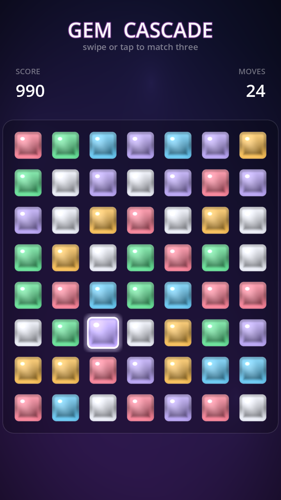

Gem Cascade
A complete, mobile-first Match-3 game built in Godot 4.6. This document explains how the whole game works — and, in depth, how the animations and visual effects were made to look good. Every gem you see is drawn by a shader; there is not a single sprite asset in the project.
· Overview
Gem Cascade is the classic swap-to-match-three loop, polished for touch: you swap two adjacent jewels, lines of three-or-more clear in a shower of particles, everything above falls to fill the gap, and fresh gems pour in from the top — often triggering chain reactions that the game rewards with rising combos, score pop-ups and a screen shake that grows with the combo.
The entire thing is built from three scripts and two shaders:
Game.gd— the root: builds the animated background, the HUD, and the board, then keeps the HUD in sync.Board.gd— the brain: the grid, input, match detection, cascades, gravity, specials, and all timing.Gem.gd— one jewel: its shader visual, its particle burst, and its personal animations.gem.gdshader/background.gdshader— the look.

★ The philosophy of “juice”
“Juice” is the game-feel term for the layer of feedback that has no effect on the rules but makes
every action feel physical and rewarding. A match that simply deletes three squares is correct;
a match that flashes, bursts into colored sparks, drops a floating +90, and nudges the
whole board feels good. Gem Cascade follows a few consistent principles:
Nothing teleports
Every position change is a tween with easing. Gems slide on swap, fall with a bounce, and pour in from above. State changes you can’t see are state changes that feel broken.
Overshoot, then settle
Selections and forges use BACK / ELASTIC easing — they
bloom slightly past their target and spring back. A linear lerp reads as “weak”; an overshoot reads as “alive.”
Reward escalates
A bigger match and a deeper cascade should be visibly, audibly bigger: the combo multiplier, the pop-up font size, and the screen-shake amplitude all scale with the chain.
Light moves
Even at rest the board breathes — a slow lustre sweeps across each jewel and the background gradient drifts, so a paused screen never looks dead.
1 Architecture & scene graph
There is a single real scene file, scenes/Main.tscn, holding one node with
Game.gd attached. Everything else is created in code. Authoring the board,
the HUD and 56 gems in .tscn files would mean hand-managing dozens of node UIDs; building
them from script is cleaner, diff-friendly, and keeps the whole project legible.
Why the HUD lives on its own CanvasLayer
The board physically moves when it shakes (we tween Board.position). If the score and
title were children of the board, they would shake too. Putting the HUD on a separate
CanvasLayer isolates it, so the playfield can rattle while the text stays rock-steady.
Signal flow
The board never touches the HUD directly. It emits four signals; Game.gd listens and
updates labels. This keeps the game logic completely unaware of presentation.
signal score_changed(total: int) signal combo_changed(combo: int) signal moves_changed(moves: int) signal shuffled()
add_child(node) runs that node’s _ready() immediately. The board emits
its starting moves = 30 inside _ready() — so if you add_child(board)
before connecting the signal, the HUD misses that first emit and shows “0”. The fix is to
connect every signal first, then add the board to the tree:
_board = Board.new() # Connect BEFORE add_child: add_child runs Board._ready(), which # emits the initial score/moves — we must already be listening. _board.score_changed.connect(_on_score) _board.moves_changed.connect(_on_moves) _board.combo_changed.connect(_on_combo) _board.shuffled.connect(_on_shuffled) add_child(_board)
2 Data model & the game loop
The board is a 7 columns × 8 rows grid of 96-pixel cells. The model is a
single 2-D array, _grid[col][row], holding either a Gem or null.
Each Gem also stores its own col/row so it knows where it belongs.
| Constant | Value | Meaning |
|---|---|---|
COLS × ROWS | 7 × 8 | Board dimensions (56 gems) |
CELL | 96 px | Grid spacing |
GEM_SIZE | 84 px | Visual gem size (smaller than the cell → gutters) |
NUM_TYPES | 6 | Distinct gem colors |
START_MOVES | 30 | Moves the player begins with |
World ↔ grid geometry
One function maps a grid cell to a screen position; its inverse maps a touch point back to a cell. The board is centered horizontally and pushed below the HUD with a fixed origin.
func _cell_pos(c, r) -> Vector2: return _origin + Vector2(c * CELL, r * CELL) func _gem_at_point(p) -> Gem: var local = p - _origin + Vector2(CELL, CELL) * 0.5 var c = int(floor(local.x / CELL)) var r = int(floor(local.y / CELL)) if c < 0 or c >= COLS or r < 0 or r >= ROWS: return null return _grid[c][r]
The central loop
Almost the entire game lives inside one re-entrant async method, _resolve(), that runs
after every valid swap. It loops until the board is stable:
Because each iteration awaits its animations, the loop naturally paces itself to the
visuals: a 4-deep cascade plays as four distinct, satisfying beats rather than one instant collapse.
A single boolean, _busy, blocks input for the whole sequence so the player can’t desync the board.
3 Input & swapping
The board accepts both interaction styles players expect, from one
_unhandled_input handler that reads touch events (the project enables
emulate_touch_from_mouse, so the very same code works with a mouse on desktop and a finger on a phone):
- Swipe — press a gem and drag past 45% of a cell; the dominant axis picks the neighbor to swap with.
- Tap-tap — tap a gem to select it (it starts breathing), then tap an adjacent gem to swap. Tapping it again deselects; tapping a far gem reselects.
func _unhandled_input(event): if _busy: return # ignore input mid-animation if event is InputEventScreenTouch: if event.pressed: _press_gem = _gem_at_point(event.position) _press_pos = event.position _swiped = false else: _on_release(event.position) elif event is InputEventScreenDrag and _press_gem and not _swiped: var delta: Vector2 = event.position - _press_pos if delta.length() > CELL * 0.45: _swiped = true _attempt_dir(_press_gem, delta)
var delta := event.position - … fails to
compile — after an is check the static type isn’t narrowed, so the type can’t be inferred.
Declaring it explicitly as Vector2 fixes it.The swap, and the “no” animation
A swap optimistically exchanges the two gems in the grid and tweens them into place. Then it checks for matches. If there are none (and neither piece is a special), it was an illegal move — so it swaps them back, and that little there-and-back is itself the feedback that says “nope.” Only a successful swap costs a move.
func _try_swap(a, b): _busy = true _swap_in_grid(a, b) a.move_to(_cell_pos(a.col, a.row), 0.18) b.move_to(_cell_pos(b.col, b.row), 0.18) await get_tree().create_timer(0.20).timeout if _find_matches().is_empty() and not has_special: _swap_in_grid(a, b) # put them back… a.move_to(…); b.move_to(…) # …and slide back: the "invalid" tell _busy = false return _moves -= 1 emit_signal("moves_changed", _moves) await _resolve(a, b) _busy = false
4 Matching & cascades
Match detection scans the grid for runs: 3-or-more same-colored gems in a row or
column. _find_runs() walks each row and each column once, collecting maximal runs of length
≥ 3. Each run records its cells, length, and orientation — the length is what later decides whether
a special piece is forged.
# Horizontal pass (the vertical pass is the mirror image) for r in ROWS: var c = 0 while c < COLS: var g = _grid[c][r] if g == null: c += 1; continue var run = [Vector2i(c, r)] var cc = c + 1 while cc < COLS and _grid[cc][r] and _grid[cc][r].type == g.type: run.append(Vector2i(cc, r)); cc += 1 if run.size() >= 3: runs.append({"cells": run, "len": run.size(), "horiz": true}) c = cc
Cascades for free
Because _resolve() re-runs _find_runs() at the top of every loop iteration,
cascades require no special code. Clear some gems → gravity drops the survivors and pours new
ones in → the loop runs again → if the new arrangement made fresh matches, they clear too, with the combo
counter one higher. The loop only exits when a full pass finds nothing. Each pass is separated by short
awaits, so a deep chain reads as a rhythmic series of pops rather than a blur.
5 Gravity & refill
After gems are cleared, _collapse_and_refill() processes each column independently in two steps:
- Compact down. Walk the column bottom-to-top with a
writecursor. Each surviving gem is moved to the lowest empty slot and tweened there. Gems that fall further travel longer — the duration scales with distance (0.16 + dist × 0.035) so they all land in a believable spread rather than snapping together. - Refill from above. Whatever space is left at the top is filled with brand-new gems spawned off-screen above the board, then tweened down into place with a stagger.
Both motions use TRANS_BOUNCE easing, so gems hit their slot and visibly bounce — the
single biggest contributor to the board feeling like physical objects instead of a spreadsheet.
var dist = write - r g.move_to(_cell_pos(c, write), 0.16 + dist * 0.035, 0.0, Tween.TRANS_BOUNCE) … # new gems pour in from above with a per-gem stagger g.position = _cell_pos(c, -1 - spawn) g.move_to(_cell_pos(c, r), 0.28 + (r + spawn) * 0.03, spawn * 0.02, Tween.TRANS_BOUNCE)
The method tracks the longest tween it scheduled and awaits exactly that long — so the resolve loop resumes the instant the slowest gem has landed, never sooner (which would clip the animation) and never on a fixed guess (which would stutter).
6 Special blast pieces
Matching more than three forges a special at one surviving cell instead of clearing it. Specials are the spectacle pieces — they’re what turns a good chain into a fireworks show.
| Made by | Special | When matched, it clears… |
|---|---|---|
| Match of 4 | STRIPE | its entire row and column |
| Match of 5+ | BOMB (color bomb) | every gem on the board of its color |
Choosing the survivor
When a run is long enough to forge a special, which gem becomes it? Preferably the one the player just
moved — it feels causal. _pick_survivor() looks for the swapped gem inside the run and keeps
it; otherwise it falls back to the middle of the run. That cell is removed from the clear-set so it
survives, then upgraded with set_special() (which plays an elastic “forge” pop).
Chain-triggering blasts (a tiny BFS)
The interesting case is when a blast is itself caught in a match — or when one blast’s area-clear
catches another blast. _expand_specials() handles this with a breadth-first search:
seed a queue with every special in the current clear-set, and for each one add the cells it destroys; if
any of those cells holds another special, queue it too. The clear-set grows until no new blasts are
reached, and a _shake() punctuates the chain.
while not queue.is_empty(): var cell = queue.pop_back() if g.special == Gem.STRIPE: for c in COLS: targets.append(Vector2i(c, cell.y)) # whole row for r in ROWS: targets.append(Vector2i(cell.x, r)) # whole column elif g.special == Gem.BOMB: for c,r in grid: if type matches: targets.append(…) # every same-color gem for t in targets: matched[t] = true if grid[t] is special and not done: queue.append(t) # chain!
The shader draws the two specials distinctly: a stripe gets a bright horizontal bar; a color bomb gets a pulsing white core (see §10).
7 No-moves detection & reshuffle
After each resolve, the board checks whether any legal move still exists. _has_possible_move()
virtually tries every adjacent swap on the live grid and asks “would this create a 3-run?” — restoring the
grid immediately afterward. The same routine (_swap_makes_match) powers the swipe/tap legality
check, so there’s one source of truth.
func _swap_makes_match(c1, r1, c2, r2) -> bool: # swap on the real grid, test, swap back — no allocation, no copy _grid[c1][r1] = b; _grid[c2][r2] = a var found = _cell_in_match(c1, r1) or _cell_in_match(c2, r2) _grid[c1][r1] = a; _grid[c2][r2] = b return found
If no move exists, _reshuffle() re-rolls every gem’s color (retrying until the new board
has at least one move and no free matches), then dissolves and re-pours the whole board with the same
staggered entrance used at startup — and the HUD flashes “NO MOVES — SHUFFLE!”.
8 Scoring & combos
Score is deliberately simple and multiplicative on the combo, so cascades are where the points are:
var gained = matched.size() * 30 * combo
The first clear of a move is combo = 1; each additional cascade step bumps it. So clearing
three gems three times in a chain is worth far more than clearing nine at once. The combo number is the
spine that the visuals hang off:
- The pop-up shows
+amount, and from combo 2 it appends×comboand grows its font. - The screen shake fires from combo 2, with amplitude
min(2 + combo, 8). - The HUD combo banner fades in with a spring pop and fades out a beat later.
9 Why the art is 100% procedural
There are no PNGs of gems. Each jewel is a quad with a fragment shader that draws the gem in real
time, tinted by a single per-instance base_color uniform. Even the particle and gem
textures are generated in code at load (an 8×8 white square; a 32×32 soft radial dot).
Why it’s the right call here
- Crisp at any resolution. The shader runs per-pixel, so jewels are razor-sharp on a 4K phone with zero mip/scaling artifacts.
- Light & selection are dynamic. The gloss, lustre sweep and bloom halo are computed from
TIMEand aselecteduniform — impossible to bake into a static sprite. - Tiny, legible repo. The whole game is a few KB of text — the codebase reads as pure engineering, with the craft on full display rather than hidden in binary assets.
- Recolor for free. Six gems, or sixteen, is one line of palette.
The shared textures
Two textures are built once and reused by every gem (lazy static fields):
static func _dot_tex(): # soft particle sprite for y,x in 32×32: var a = clamp(1 - dist, 0, 1) a = a * a # square it → soft falloff img.set_pixel(x, y, Color(1,1,1, a))
#ff5c7a rose#ffb020 amber#36e07a jade#38bdf8 azure#a78bfa violet#eef2ff diamondThe palette was chosen for maximum hue separation (color-blind-friendlier than the usual red/green/blue trio) so matches read instantly. The CSS jewels above are an approximation; the real ones are shaded by the fragment shader below.
10 The gem shader, layer by layer
This is where most of the “it looks good” lives. gem.gdshader is a
canvas_item fragment shader applied to each gem’s Sprite2D. It receives the
gem’s tint and three control uniforms, and composites the jewel from a stack of cheap analytic layers.
Every gem is the same shader; only the uniforms differ.
uniform vec4 base_color : source_color; // the gem's hue (per instance) uniform float selected = 0.0; // 0..1 selection pulse (animated from GDScript) uniform int special = 0; // 0 normal · 1 stripe · 2 color-bomb uniform float shimmer = 1.0; // global lustre intensity
The shape: a rounded-box signed distance field
Instead of sampling a sprite, the gem’s shape is defined mathematically by a signed distance
field (SDF). For any pixel, rounded_box() returns the signed distance to the gem’s
edge — negative inside, zero on the border, positive outside. That single number drives the silhouette,
the anti-aliasing, the beveled edge, the rim light, and the selection ring.
float rounded_box(vec2 p, vec2 b, float r){ vec2 q = abs(p) - b + r; return length(max(q, vec2(0.0))) + min(max(q.x, q.y), 0.0) - r; } void fragment(){ vec2 uv = UV * 2.0 - 1.0; // remap to -1..1, centered float d = rounded_box(uv, vec2(0.80), 0.26); float aa = fwidth(d) * 1.5; // 1px-consistent edge softness float mask = 1.0 - smoothstep(0.0, aa, d); // 1 inside → 0 outside
fwidth(d) for anti-aliasing? fwidth measures how fast
d changes between neighboring pixels, giving a screen-space-consistent edge that’s exactly
~1px soft no matter how big the gem is drawn or how it’s scaled mid-bounce. No jaggies, ever — and it
costs one instruction.The composite stack
On top of the silhouette, the body color is built up from these layers, in order. Each is a few cheap math ops; together they read as a faceted, lit jewel:
abs(d+0.04)) → a cut, faceted rim.TIME — the moving shine.special > 0.selected uniform.float rad = length(uv); vec3 col = base_color.rgb; // 1 · top-lit vertical gradient vec3 body = mix(mix(col, vec3(1.0), 0.42), col*0.38, smoothstep(-0.9, 1.0, uv.y)); // 2 · center pop body = mix(body, mix(col, vec3(1.0), 0.55), smoothstep(0.7, 0.0, rad)*0.35); // 3 · beveled darker edge body *= 1.0 - smoothstep(0.18, 0.0, abs(d + 0.04)) * 0.22; // 4 · broad soft lustre, drifting with TIME float band = sin((uv.x - uv.y) * 1.25 - TIME * 0.7); body += smoothstep(0.25, 1.0, band) * 0.08 * shimmer; // 5 · crisp gloss dot + soft surround float spec = smoothstep(0.18, 0.0, length((uv - vec2(-0.34,-0.40)) * vec2(1.0,1.25))); body += spec * 0.95; body += smoothstep(0.6, 0.0, length(uv - vec2(-0.26,-0.32))) * 0.12; // 6 · bottom rim bounce light float rim = smoothstep(-0.1, 0.7, uv.y) * smoothstep(0.35, 0.05, abs(d + 0.03)); body += rim * mix(col, vec3(1.0), 0.35) * 0.55;
Specials, drawn in the same pass
if (special == 1) // stripe → bright horizontal bar body = mix(body, vec3(1.0), smoothstep(0.15, 0.08, abs(uv.y)) * 0.85); else if (special == 2){ // color bomb → pulsing white core float pulse = 0.5 + 0.5 * sin(TIME * 5.0); body = mix(body, vec3(1.0), smoothstep(0.5, 0.0, rad) * (0.4 + 0.4*pulse)); }
10a Getting the lustre right (an iteration story)
The shine did not look good on the first try, and the fix is instructive — it’s the difference between a shader that says “amateur” and one that says “jewel.” The honest progression:
✗ First attempt — a hard sweep
The shine was a thin, high-contrast diagonal band moving fast across the gem:
float sweep = sin((uv.x - uv.y)*2.5 - TIME*2.0); body += smoothstep(0.86, 1.0, sweep) * 0.25;
Why it looked bad: a narrow smoothstep(0.86,1.0) window + high
amplitude = a sharp bright line scanning the surface. It read as a glitchy scan-line, not
light on a stone. Fast TIME*2.0 made it twitchy.
✓ The fix — a broad slow sheen + a static gloss
Split “shine” into its two real-world parts and tune each:
// (a) wide, faint, slow drifting sheen float band = sin((uv.x - uv.y)*1.25 - TIME*0.7); body += smoothstep(0.25, 1.0, band) * 0.08; // (b) a crisp, STATIC specular hotspot body += spec * 0.95;
Why it works: the wide smoothstep(0.25,1.0) window makes the sheen
a gentle gradient across the whole gem; low 0.08 amplitude keeps it subtle; slow
0.7 drift makes it luxurious. The sharpness now comes from a separate
fixed gloss dot — real glossy objects have a still highlight that doesn’t race around.
col*0.38), a stronger center pop, and a tighter brighter gloss
(0.95). The lesson: “juicy” lives between glitchy and washed-out, and you only find
it by overshooting both directions and meeting in the middle.
The principles that generalize
- Separate the moving sheen from the sharp highlight. One slow & wide, one crisp & still. Conflating them is what makes shine look cheap.
- Subtle motion beats fast motion. A barely-moving sheen reads as quality; a fast one reads as a bug.
- Contrast is the dial for “premium.” Too little → pastel; too much → garish. Tune it last, against real screenshots.
10b The selection glow — shader + tween together
The first selection effect was a single scale-up that then sat still — it read as weak. The fix is a collaboration between the shader (which can draw glow outside the gem) and GDScript (which animates it forever while selected).
Shader side: a halo that lives beyond the body
Normally a fragment outside the gem is discarded. But a glow needs to bloom past the
silhouette — so the alpha is computed jointly: it’s the max of the body mask and an outward
bloom term that only exists when selected > 0. Where the body is absent, the
pixel shows a brightened tint of the gem color instead of being thrown away.
// outward bloom drives EXTRA alpha beyond the body silhouette float bloom = selected * (1.0 - smoothstep(0.0, 0.34, max(d, 0.0))); float alpha = max(mask, bloom * 0.7); if (alpha <= 0.004) discard; … // a bright ring exactly on the body edge + an inner brighten float sel_ring = selected * smoothstep(0.09, 0.0, abs(d + 0.02)); body += mix(col, vec3(1.0), 0.7) * sel_ring * 0.9; body += col * selected * 0.22; // compose: bloom color shows where the body mask is absent vec3 final = mix(mix(base_color.rgb, vec3(1.0), 0.65), body, mask);
Script side: a looping “breathing” pulse
A selected gem should feel alive, so GDScript runs an infinite looping tween that
oscillates the sprite’s scale and the shader’s selected value together — they
breathe in sync. Deselecting kills the loop and springs the gem back to rest. Sine easing makes the
breathing smooth; the two halves give a slow in-out rhythm.
func set_selected(on): if _sel_tween and _sel_tween.is_valid(): _sel_tween.kill() if on: _sprite.scale = base * 1.1 _sel_tween = create_tween().set_loops() # forever _sel_tween.tween_property(_sprite, "scale", base*1.2, 0.5).set_trans(SINE) _sel_tween.parallel().tween_method(_set_sel, 1.0, 0.55, 0.5) # glow down _sel_tween.tween_property(_sprite, "scale", base*1.06, 0.5).set_trans(SINE) _sel_tween.parallel().tween_method(_set_sel, 0.55, 1.0, 0.5) # glow up else: _set_sel(0.0) create_tween().tween_property(_sprite, "scale", base, 0.18).set_trans(BACK)
11 Tween-driven motion
Every gem movement in the game funnels through one method, Gem.move_to(). The caller picks
the duration, an optional start delay (for staggering), and an easing curve — and that single choice of
curve is what gives each kind of motion its character.
func move_to(target, duration, delay = 0.0, trans = Tween.TRANS_BACK): var t = create_tween() if delay > 0.0: t.tween_interval(delay) t.tween_property(self, "position", target, duration).set_trans(trans).set_ease(EASE_OUT)
| Motion | Easing | Why this curve |
|---|---|---|
| Swap into place | BACK | A tiny overshoot makes the swap feel snappy and physical. |
| Invalid swap-back | BACK | Same curve, reversed direction — the “bounce back” that means “no.” |
| Gravity fall | BOUNCE | Gems hit their slot and bounce — the core of the physical feel. |
| Refill from top | BOUNCE | New gems pour and settle the same way the survivors do. |
| Startup / shuffle entrance | BACK | Staggered overshoot makes the board “assemble” instead of appear. |
| Select breathe | SINE | Smooth, endless, never jarring. |
| Special forge / pop | ELASTIC / BACK | Springy overshoot for a celebratory “ping.” |
Staggering = life
Notice the delay argument threaded through the fills: (c + r) * 0.03 at
startup, spawn * 0.02 on refill. Without it, 56 gems would arrive on the exact same frame
— a wall. With it, they arrive in a diagonal wave. The same trick (tiny per-element delays) is what makes
the entrance, the refill, and the reshuffle all feel choreographed rather than mechanical.
12 Particle bursts
Every cleared gem fires a one-shot GPUParticles2D burst in its own color, so a
match dissolves into a spray of matching sparks. The emitter is configured once in
Gem.setup() and triggered in pop().
_burst.amount = 18 _burst.one_shot = true _burst.explosiveness = 1.0 # all at once, not a stream _burst.lifetime = 0.6 pm.spread = 180.0 # full circle pm.gravity = Vector3(0, 320, 0) # sparks fall realistically pm.initial_velocity = 120..320 pm.angular_velocity = ±400 # tumbling pm.scale_curve = 1 → 0 # shrink to nothing pm.color = COLORS[type] # tinted to the gem
func pop(): _burst.restart(); _burst.emitting = true var t = create_tween().set_parallel(true) # flash bigger, THEN shrink to zero while spinning t.tween_property(_sprite,"scale", base*1.4, 0.10) t.chain().tween_property(_sprite,"scale", ZERO, 0.18).set_trans(BACK) t.parallel().tween_property(_sprite,"rotation", randf_range(-PI,PI), 0.28) await get_tree().create_timer(0.65).timeout # let sparks live queue_free()
The clear has three beats happening at once: the gem flashes 40% bigger, then
shrinks to nothing while spinning a random amount, while the sparks fly and
fall. The node only frees itself after 0.65 s so the particles aren’t cut off mid-air.
local_coords = false means sparks keep flying in world space even as the gem node is
scaled away.
13 Screen shake
Impact is sold with a short positional shake of the whole Board node. It’s a chain of six
tiny random offsets followed by a settle back to zero. Crucially it fires only from combo 2+
and its amplitude scales with the combo, so the screen punches harder the deeper the chain — and a plain
single match stays calm.
func _shake(strength): var t = create_tween() for i in 6: t.tween_property(self, "position", Vector2(randf_range(-strength,strength), randf_range(-strength,strength)), 0.03) t.tween_property(self, "position", Vector2.ZERO, 0.05) # callers: if combo >= 2: _shake(min(2.0 + combo, 8.0)) # grows with the chain, capped _shake(5.0) # a firm jolt whenever a blast triggers
Because the HUD is on a separate CanvasLayer (see §1), only the playfield
rattles — the text never blurs. The cap at 8 px keeps even a huge chain from becoming nauseating.
14 Floating score pop-ups
Each clear spawns a temporary Label at the average position of the cleared gems,
so the number appears right where the action was. It drifts up, fades out, and frees itself. From combo 2
it shows the multiplier and grows its font, so a big chain literally throws a bigger number.
var avg = (sum of cleared cell positions) / count # appear at the match lbl.text = combo < 2 ? "+%d" : "+%d x%d" lbl.add_theme_font_size_override("font_size", 30 + combo*6) # bigger per combo var t = create_tween().set_parallel(true) t.tween_property(lbl, "position", up_by_70px, 0.7) # float up t.tween_property(lbl, "modulate:a", 0.0, 0.7).set_delay(0.25) # lingers, then fades t.chain().tween_callback(lbl.queue_free) # self-cleanup
A gold fill with a dark outline keeps the number legible over any gem color underneath.
15 HUD pulse
The stat labels don’t just change text — they react. Every time the score or moves update, the label springs to 120% and elastically settles back, so your eye is drawn to what changed. The combo banner fades in with the same pop on a chain and fades out a beat later.
func _pulse(node, scale = 1.2): node.pivot_offset = node.size * 0.5 # scale from center var t = create_tween() t.tween_property(node, "scale", Vector2.ONE*scale, 0.08).set_trans(BACK) t.tween_property(node, "scale", Vector2.ONE, 0.14).set_trans(ELASTIC)
16 The living background
A full-screen ColorRect on the bottom-most CanvasLayer runs
background.gdshader: a vertical gradient whose split line gently waves, three soft glow blobs
that drift on lazy sine/cosine orbits, and a vignette that focuses the eye on the board. It’s extremely
cheap and ensures the screen is never static even when the player is just thinking.
void fragment(){ vec2 uv = UV; // gradient line waves slowly across x and time float g = uv.y + 0.12 * sin(uv.x*3.0 + TIME*0.25); vec3 col = mix(color_a.rgb, color_b.rgb, clamp(g, 0.0, 1.0)); // three drifting glow blobs for (int i = 0; i < 3; i++){ vec2 c = vec2(0.5 + 0.42*sin(TIME*0.18 + i*2.1), 0.5 + 0.42*cos(TIME*0.15 + i*1.7)); col += (0.05 / (distance(uv,c)*7.0 + 0.35)) * glow.rgb; } col *= smoothstep(1.25, 0.25, distance(uv, vec2(0.5))); // vignette COLOR = vec4(col, 1.0); }
· Tuning reference — the magic numbers
Game-feel is in the constants. These are the dials that were tuned against real screenshots; they’re collected here so the whole feel can be re-balanced in one place.
| Where | Value | Effect |
|---|---|---|
| Lustre sheen amplitude | 0.08 | How visible the moving shine is. Higher → glitchy. |
| Lustre drift speed | TIME * 0.7 | How fast the sheen travels. Higher → twitchy. |
| Gloss dot intensity / size | 0.95 / 0.18 | The “wet” highlight. The crispness of the gem. |
| Selection breathe scale | 1.06 – 1.20 | Amplitude of the pulse. Even small reads as alive. |
| Selection bloom reach | 0.34 | How far the halo extends past the gem. |
| Swap duration | 0.18 s | Snappiness of a move. |
| Fall base + per-cell | 0.16 + 0.035/cell | Gravity weight; bounce spread. |
| Refill stagger | 0.02 s/gem | The diagonal “pour” wave. |
| Shake amplitude | min(2+combo, 8) | Impact that grows with the chain. |
| Score formula | n × 30 × combo | Cascades are where the points are. |
· Performance & mobile
- Mobile renderer / Metal. The project uses Godot’s
mobilerendering method; verified running on Apple Silicon (Metal 4.0). - Cheap shaders. Both shaders are a handful of
smoothstep/sin/lengthops per pixel — no loops over textures, no branches in the hot path beyond the special marker. 56 small quads is nothing for a GPU. - One material per gem, two shared textures. Each gem owns a
ShaderMaterial(so itsselected/specialuniforms are independent), but the white quad and the soft particle dot are built once and shared by all. - Self-cleaning nodes. Popped gems and score pop-ups
queue_free()themselves after their animation; nothing leaks across a long session. - Resolution-independent.
canvas_itemsstretch with anexpandaspect means it scales cleanly to any phone, and the SDF gems stay crisp at any size. - Touch-first input with emulate_touch_from_mouse, so one code path serves both finger and mouse.
· File map — where to look
| File | Lines | Responsibility |
|---|---|---|
scenes/Main.tscn | ~5 | The one real scene: a node with Game.gd. |
scripts/Game.gd | ~150 | Root: background, HUD, board wiring, HUD pulse. |
scripts/Board.gd | ~520 | Grid, input, matching, cascades, gravity, specials, shake, pop-ups. |
scripts/Gem.gd | ~165 | One piece: shader visual, particles, select/swap/fall/pop animation. |
shaders/gem.gdshader | ~68 | The procedural jewel + selection glow + special markers. |
shaders/background.gdshader | ~24 | The animated gradient backdrop. |
project.godot | — | Portrait, mobile renderer, touch emulation, 720×1280. |
Run it: godot --path . scenes/Main.tscn · or open project.godot in the editor.
· How it was verified
Because the game is animation-heavy, it was checked by rendering real frames, not by reading code. A
temporary harness scene added a sibling node that, after a delay, drove the board’s own logic to play a
sequence of legal swaps — finding them via the board’s _swap_makes_match() and calling
_try_swap() — while saving get_viewport().get_texture().get_image() to PNGs
every beat, then quitting. The captured frames confirmed fills with no false matches, swaps, cascades,
the “+90 ×3” combo pop-ups, particle bursts, and the selection halo. The harness was deleted before
shipping.
- A child node’s
_ready()runs before its parent’s — so a probe must fetch the board after its firstawait, not at the top of_ready(). add_child()runs_ready()immediately, so signals emitted there are lost unless you connect first (the MOVES-shows-0 bug from §1).